ℚ: Rational numbers
We are able to solve equations such as x + 2 = 0 in ℤ, but we cannot solve 2x = 7. For the purpose of solving equations such as
ax = b, a,b ∈ ℤ, a ≠ 0
We are going to extend the set of integers to that of rational numbers ℚ. As we've done for the construction of integers from natural numbers, consider the cartesian product ℤ x ℤ \{0}, made up by the ordered integer pairs, in which the second element of the pair is different from zero. The following relation is introduced in the set
(a,b) ρ (c,d) ⇐⇒ ad = bc
It is an equivalence relation. We prove only transitivity as the other properties are self-evident. Let (a,b) ρ (c,d), and (c,d) ρ (e,f), it follows
ad = bc, cf = de
by multiplying the first equality on the right by f (≠ 0) and the second equality on the left by b (≠ 0 as well) we obtain by comparison
adf = bde
The commutativity of multiplication and the cancellation law, which hold true in ℤ, (remember that d ≠ 0), allow us to conclude that af = be, that is (a,b) ρ (e,f).
We set
ℚ := ℤ x ℤ \ {0} / ρ
The elements of ℚ are thus equivalence classes that we indicate as
(a,b) All (x,y) that are equivalent to (a,b)
Some of the elements of ℚ, i.e. equivalence classes in ℤ x ℤ \ {0} are depicted below.
We define in ℚ the following two operations
(a,b) + (c,d) := (ad+bc,bd) 3.1
(a,b) ⋅ (c,d) := (ac,bd) 3.2
To understand why we defined the operations this ways, forgetting for a moment the talk about equivalence relation and the like, we really want (a, b) to be a/b. If so, what should (a, b) + (c, d) be other than the formally calculated
This motivates us to define (3.1). Now to the multiplication in ℚ. Again motivated by thinking of (a, b) as a/b, we define as (3.2).
Observe also how the couples (ad+bc,bd) and (ac,bd) are both in ℤ x ℤ \ {0}, since ℤ \ {0} has no zero divisors. It remains to prove that the operations are well-defined, that is, even if are defined through representative of the classes they do not depend on the particular choice:
Let
(a,b) ρ (a',b'), (c,d) ρ (c',d')
We have to prove that
(ad + bc,bd) ρ (a'd'+b'c',b'd'), that is (ad+bc)b'd' = bd(a'd' + b'c')
Remembering that ab' = ba' and cd' = dc', we immediately notice the relation is verified. Analogously for multiplication.
The classes
0 := (0,1) = (0,b)
1 := (1,1) = (a,a)
are neuter elements respectively for addition and for multiplication. With regards to these operations ℚ is a commutative ring with unit. There is also another important property
(a, b) ⋅ (b, a) = (ab, ba) = (1, 1) ∀(b, a), such that a ≠ 0, b ≠ 0
Notice that (b,a) ∈ ℤ x ℤ \ {0}, since we supposed a ≠ 0. The element (b,a) is known as inverse of the element (a,b).
Definition 3.1.1. A commutative ring with unit in which every non-null element has a multiplicative inverse is known as field. □
We have the following result.
Definition 3.1.2. The set
ℚ = ℤ x ℤ \ {0} / ρ
is a field
We want to prove the following result:
Proposition 3.1.3. The field ℚ is an extension of ℤ. Moreover every element of ℚ can be written as uv−1, with u,v ∈ ℤ
Proof. We must find in ℚ a copy of ℤ. To this end we notice that the application
φ: ℤ → ℚ
a ↦ (a, 1)
is injective. To prove it (a,1) ≠ (b,1). But that means in particular that (a,1) is not equivalent to (b,1). So we have a ⋅ 1 ≠ b ⋅ 1, which is exactly what we wanted.
Moreover the image φ of the sum of two elements of ℤ is the sum of the images (in ℚ), and the same thing for the product. This guarantees us that the image of ℤ in ℚ is the copy of ℤ inside ℚ.
Every element (a, b) ∈ ℚ can be written in the form
(a, b) = (a, 1) ⋅ (a, b)
where (a, 1) ⋅ (a, b) can be mapped through φ to elements of ℤ thus (1, b) is the inverse of an element in ℤ. Every element of ℚ is of the form uv−1, u,v ∈ ℤ, v ≠ 0.□
Since that any element of ℚ can be written in the form uv−1, u,v ∈ ℤ, v ≠ 0, ℚ is known as field of quotients of ℤ. We can write the elements of ℚ in the usual form
(a, b) = (a, 1) ⋅ (a, b) = a / b
that is as fractions.
In particular, every equation such as
ax = b, a,b ∈ ℤ, a ≠ 0
is solvable in ℚ. We have solved our initial problem.
Archimedean Property of ℚ
An important property of the rational numbers is the Archimedean property named after Archimede of Syracuse (c. 287 B.C. − 212 B.C.). This property says each positive rational numbers is strictly smaller thatn some natural number. For every positive rational number r ∈ ℚ+, there exists a natural number n ∈ ℕ, such that n > r. Equivalently can be states as follows:
Theorem 3.1.4. (Archimedean property). If r and s are positive rational numbers, then there exists a positive integer n, such that
nr > s
Proof. Let r = a/b and s = c/d where a,b,c and d are positive intgers. If n is a positive integer, then nr > s ff nad > bc. If for n we choose 2bc, this inequality is satisfies, sinche ad ≥1. □
The next theorem shows that ℚ in dense: between any two rational numbers there is another rational number.
Theorem 3.1.5. Between any two distinct rational numbers there is another rational number.
Proof 1. We
Proof 2. Suppose that r,s ∈ ℚ with r < s. It is sufficient to prove that r < (r + s)/2 and (r + s)/2 < s. To prove the first inequality we start with r < s and infer, in turn, r + r < r + s, 2r < r + s, and r < (r + s)/2. The second inequality is derived similarly. □